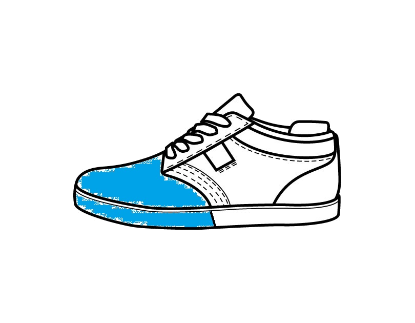
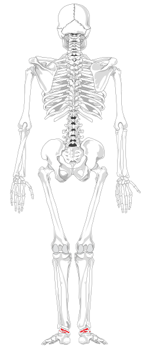
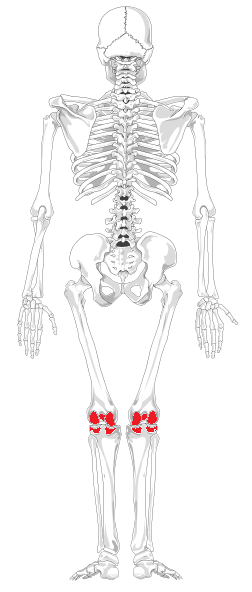
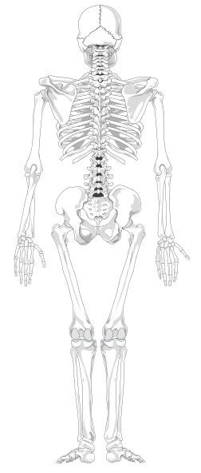
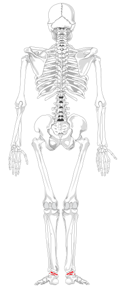
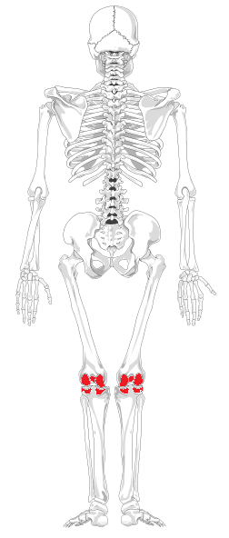
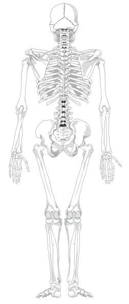
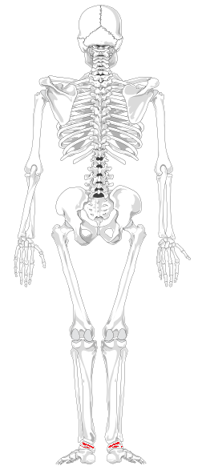
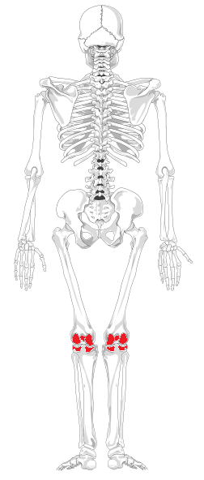
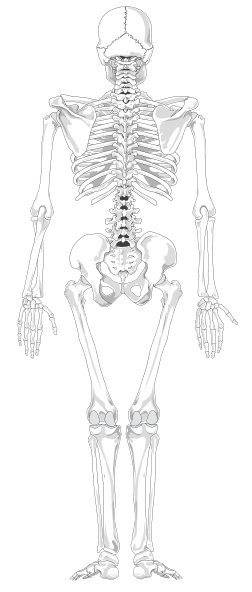

1. Kada koristimo precision jump (precizni skok/saut de précision)?
Kada zelimo kontrolirano doskociti na objekt B jer uvjeti okolino jedino to dozvoljavaju.
Nema nekog bitnog razloga.
Prilikom penjanja po zidovima.Precizni skok je zapravo naziv za odraz nogom od zida i skok na sam vrh.
2. U kojem od slijedećih slučajeva bi bilo dobro napraviti precision jump, a ne drop?
3.Precizni skok može ostetiti koljena ukoliko se nepravilno doskoci, no to nije ništa u usporedbi s izostavljanjem uporabe rolla nakon nekog velikog dropa.
Netočno
Točno
4. Kliknite na dio tenisice za koji smatrate da bi bio idealan za pravilan doskok.
5. Za kraj prođite mišem po različitim dijelovima kostura, kako bi vidjeli koji dijelovi tijela se "najviše troše" ovom kretnjom, ukoliko je izvedena nepravilno.
   




